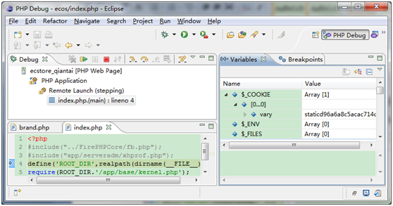
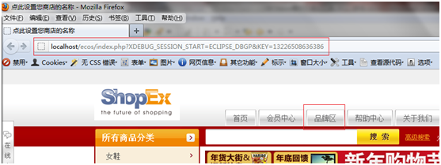
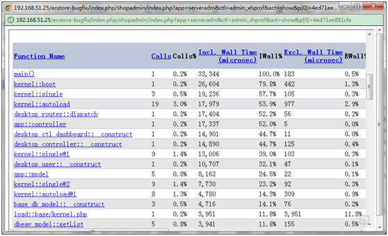

ECOS调试及调试工具
本地调试
PHP基础断点调试法
此方法主要是是 php内置的函数来进行调试， 比较简单方便，一般配合exit或者die方法来进行断点调试， 打印自己需要的变量或者找到程序执行到的位置
echo /print
一般用来输出变量值，或者你不确定程序执行到了哪个分支的情况下使用
例如：
<?php
$fanliMoney = 100;
if($fanliMoney<10){
print "返利0元";
}elseif($fanliMoney>=10 && $fanliMoney<100){
print "返利1元";
}elseif($fanliMoney>=100 && $fanliMoney<500){
echo "返利5元";
}
判断你的程序走到哪个分支，打印一下就知道了
printf
常用来调试输出一些其他输出不能正确输出的变量，比如在PHP中，浮点数和整数之间经常会造成迷惑，
例如：
<?php
$float_score = round(1234.10,2)*100;
$int_score = intval($float_score);
var_dump($float_score);
var_dump($int_score);
结果：
float 123410 int 123409
这个结果出乎意料，为什么会不一样呢？原来php对这个的处理不是特别精确的，
所以上面的结果就可以用 printf 来查找错误，找出到底里面还藏着什么，
我们用printf来打印结果看看程序：
<?php
$float_score = round(1234.10,2)*100;
$int_score = intval($float_score);
//用printf就能知道上面打印结果的原因了
printf('%0.20f',$float_score);
echo "<br>";
printf('%0.20f',$int_score);
结果:
123409.99999999998544808477 123409.00000000000000000000这时我们发现原因了，原来php对浮点数的处理是不太精确的(其实是计算机对浮点数的处理是不可能精确的），
只是一个接近的结果，所以会出现打印值不同。
平时在开发项目时，尤其电子商务网站对于金额的处理等等是不可以出错的，
这时我们就该注意这些了。
print_r / var_dump / var_export / debug_zval_dump
主要是用来输出数组和对象数据等，一般我们在查看接口返回值，或者某些不太确定变量的时候使用
代码如下：
<?php
$arr = array(
"arr" => array(0=>'val0',"key1"=>1),
"bool1" => true,
"bool2" => false,
"string" => 'test string',
"int" => 100,
"object" => new stdclass,
"null" => NULL
);
//加上<pre>，会格式化输出，方便查看
echo "<pre>";
print_r($arr);
var_dump($arr);
var_export($arr);
$arr2=$arr;
debug_zval_dump($arr);
echo "</pre>";
结果分析：
print_r：
Array
(
[arr] => Array
(
[0] => val0
[key1] => 1
)
[bool1] => 1
[bool2] =>
[string] => test string
[int] => 100
[object] => stdClass Object
(
)
[null] =>
)
print_r打印的结果看起来很直观，但是打印布尔值和NULL值时输出为空
var_dump：
array
'arr' =>
array
0 => string 'val0' (length=4)
'key1' => int 1
'bool1' => boolean true
'bool2' => boolean false
'string' => string 'test string' (length=11)
'int' => int 100
'object' =>
object(stdClass)[1]
'null' => null
与 print_r类似， 但是多了数据类型的输出，例如接收来自外部的数据时，就可以查看接收到的数据的数据类型，方便我们进行处理
var_export：
array (
'arr' =>
array (
0 => 'val0',
'key1' => 1,
),
'bool1' => true,
'bool2' => false,
'string' => 'test string',
'int' => 100,
'object' =>
stdClass::__set_state(array(
)),
'null' => NULL,
)
输出的数据是合法的php代码，可以直接赋值给一个变量，
当我们记录日志到文件中时，可以用var_export格式化后直接存放到文件中；
但是当var_export的变量是资源文件(例如引入图片，html文件等)类型时， var_export会返回NULL
debug_zval_dump：
array(7) refcount(3){
["arr"]=>
array(2) refcount(1){
[0]=>
string(4) "val0" refcount(1)
["key1"]=>
long(1) refcount(1)
}
["bool1"]=>
bool(true) refcount(1)
["bool2"]=>
bool(false) refcount(1)
["string"]=>
string(11) "test string" refcount(1)
["int"]=>
long(100) refcount(1)
["object"]=>
object(stdClass)#1 (0) refcount(1){
}
["null"]=>
NULL refcount(1)
}
输出结果跟 var_dump 类似，唯一增加的一个值是refcount ,就是记录一个变量被引用了多少次（变量分离）
debug_backtrace / debug_print_backtrace
debug_backtrace
debug_backtrace是PHP Error的函数，它返回一个数组，显示的是代码执行的回溯信息，有当前的函数名，行号，文件名，类名，对象，调用类型等。这里我们用W3CSHOOL的一个例子，平时一般也不建议用这个来在浏览器中输出信息，因为信息太多，所以可以在写自己的日志方法时，可以用以记录其中的某些信息，
例如：
<?php
function one($str1, $str2){
two("Glenn", "Quagmire");
}
function two($str1, $str2){
three("Cleveland", "Brown");
}
function three($str1, $str2){
print_r(debug_backtrace());
}
one("Peter", "Griffin");
输出：
Array( [0] => Array ( [file] => C:\webfolder\test.php [line] => 7 [function] => three [args] => Array( [0] => Cleveland [1] => Brown ) ) [1] => Array( [file] => C:\webfolder\test.php [line] => 3 [function] => two [args] => Array( [0] => Glenn [1] => Quagmire ) ) [2] => Array( [file] => C:\webfolder\test.php [line] => 14 [function] => one [args] => Array( [0] => Peter [1] => Griffin ) ) )
debug_print_backtrace
debug_backtrace也是PHP Error的一个函数，它没有返回值，打印出的是函数的调用顺序，以及调用的php文件和行数，我们系统的trigger_error函数中也是利用这个函数，这里我们仍然用商品品牌列表页这个方法showlist,如图
浏览器端品牌列表页结果：
它清晰的显示了在调用showlist方法时的调用的一系列基本方法。
浏览器端插件调试法
当我用着php的基本的调试法，每次都要写格式化代码，打印代码，断点代码，而且还会阻断浏览器的正常显示，这时我们不想这样每次都这样麻烦，这是我们就可以用到一个叫firebug的一个插件firephp，这样你的PHP脚本就能够发送调试信息到浏览器，轻易的通过HTTP相应头编码，而不用每次都输入多余的代码和阻断网页的正常显示，是不是很有爱呢。

现在大部分程序员在开发网页项目时候都完全无法离开FireBug。这个小巧的"臭虫"是一个神奇而有用的html、css、javascript、dom、网络等的调试神器。但是你也许不知道这个还可以用来调试PHP，没错，它可以，感谢一款名为FirePHP的FireFox插件。
通过一个小小的服务端库，和这款在Firebug上的插件，你的PHP脚本就能够发送调试信息到浏览器，轻易的通过HTTP相应头编码。一旦你设置，你可以在Firebug的控制台获得PHP脚本警告和错误，就感觉像直接调试JavaScript一样，而不需要阻断页面的正常加载。
使用这个工具，首先你需要安装FirePHP插件。这个插件需要你已经安装FireBug。装好FirePHP之后，重新打开Firebug面板时候，你会看到新加了一个蓝色的臭虫图标。点击这个图标会出现一个开启或者关闭FirePHP的菜单。
当然，这时候我们还无法做任何事，你还需要安装FirePHP的服务端，点击这里下载，这里是目前最新的firephp核心包，当然还有pear这种方式。
我这里的服务器项目根目录是D:\wamp\www，所以我将解压后的lib下的FirePHPCore文件夹放置于我的项目根目录下，然后在ecstore中你需要调试的代码开头引入”/FirePHPCore/fb.php"核心文件，推荐在ecstore的index.php中引入，这样比较方便，不需要每次都写引入代码。
这是因为FirePHP通过HTTP头发送记录的数据，你需要缓存你的代码产生的输出，从而来响应头信息从这里获取代码生成的内容。这个可以通过在代码头部的ob_start来实现。
当这些步骤完成后，你可以开始使用FirePHP了。你需要做的只是调用fb函数在任何你想要记录的地方。同时你也可以使用一个可选的标签和常量去定义预定义信息，一个错误，一个警告，或者一条信息。
测试：
这里我在我们ecstore的b2c中的品牌列表页showList方法中打印其中的”$this->pagedata”这个变量，看看有哪些值
前台打开品牌列表页，firebug中有如下结果：
你还可以用firephp来跟踪你的程序，我继续修改代码
前台firebug中看到的结果如下：
这个跟踪功能可以让你调试更复杂的代码，让你精确的知道你的方法是在哪里被调用的。当然，别忘了你需要在你代码发布之前移除你的调试语句和firephp的引入代码。
调试器单步调试法
再聪明的你有时也会遇到自己很难调试信息的时候，这时候我们的单步调试功能就显现出它的强大了，对，你可以跟着代码一行一行的走，这样地毯式的搜索，能找不出错误吗，o(∩_∩)o 哈哈，对，就是这样，这就是强大的单步调试，让你看清每一步的走向，每一步变量值的变化，一切了如指掌，不需要您有火眼金睛就可以带你发现问题所在。
常见的集成环境有Vim，eclipse，zendstudio等，vim可定制性的强大就不说了，zendstudio等其实都是基于eclipse开发的，所以这里主要讲解eclipse(PDT)+xdebug来进行单步调试，这种方法能跟到每一步代码，优点很明显，缺点就是使用时占用资源大。首先需要在官网下载php的xdebug插件,然后修改php.ini配置文件，增加如下配置:
[xdebug] ;PHP5.3以上版本 zend_extension = "d:/wamp/bin/php/php5.3.5/zend_ext/php_xdebug-2.1.0-5.3-vc6.dll" ;PHP5.2及以下版本 ;zend_extension_ts = "d:/wamp/bin/php/php5.3.5/zend_ext/php_xdebug-2.1.0-5.3-vc6.dll" xdebug.profiler_enable=on xdebug.profiler_output_dir="d:/temp/xdebug" xdebug.remote_enable = 1 xdebug_remote_host = "localhost" xdebug.remote_port = 9000 xdebug.remote_handler = "dbgp"
然后重启服务器，并能在phpinfo中查看到xdebug扩展即表明开启成功
注意：如果 php.ini 中开启了 ZendExtensionManager.dll 和zendOptimize，必须将他们都屏蔽掉，否则和xdebug冲突,xdebug一般不要下载nts版的接下来我们开始配置eclipse的调试环境
(1)新增一个PHP 服务器 依次打开 window -> Preferences -> PHP -> PHP Servers 点击 New 新建一个 Server 分别在上下两个文本框里添上 新建服务器的名称(任意写) 和 服务器的根目录地址(http://localhost/)
(2)添加一个Executable 依次打开 window -> Preferences -> PHP -> PHP Executables 点击 Add 新增一个Executable Name 里填上一个名称(任意写)Executable Path 里写上php.exe的实际路径PHP ini file(optional) 里写上php.ini的实际路径，这个是可选的PHP debugger 这一项里选择XDebug
(3)使用刚才新增的PHP服务器和Executable 依次打开 window -> Preferences -> PHP -> Debug PHP Debugger 选择XDebugService 选择刚才新添加的PHP服务器PHP Executable 选择刚才新添加的Executable

(4)修改默认的调试浏览器 依次打开 window -> Preferences -> General -> Web Browser 点击new新增一个浏览器（推荐火狐） name 随便写Location 写上浏览器的执行文件地址parameter 可以不填
这样eclipse的调试环境就搭好了，接下来我们调试使用 依次打开 Run -> Run Configurations… 右击PHP Web Page，然后new一个配置页，Name随便 写 Server Debugger选择Xdebug PHP Server 选择你刚新建的Server File 选择你项目的入口文件，一般选择index.php Breakpoint一般默认， URL根据你调试的代码路径可以默认也可以做相应的调整 如果已经在你需要调试的代码处打上断点，这时就可以点击 Debug 进行调试了
然后我门在需要调试代码的地方打上断点，eclipse中就是双击代码前的行号附近，就会打上断点，如图，我们仍然以商品品牌列表页这个方法作为例子，
我们在行号为30的代码前打了一个断点，然后我们就开始调试，第一次我们可以进教大家配置断点的窗口点debug按钮就开始调试了，以后就可以直接点击历史记录就开始调试了，如图
点击调试后，
第一步会显示调试界面

与此同时，打开了我们设置的外部浏览器，
这时什么东西都没有，因为我们前面选择了
所以这时我们返回eclipse界面
点击图中标记的跳过断点按钮，然后再去浏览器查看，再注意链接地址是什么样的，这个链接地址就是调试时候的地址，如果

然后我们点击上图中的“品牌区”，也就是触发我们的品牌列表区这个方法了，这时候eclipse任务栏就会自动提示，
然后继续去eclipse界面，按F8或者跳过断点按钮

就会直接跳到我们打的断点处了，
这里我们能查看但任何你想要的值，是不是很帅气，忽忽。
线上调试
日志记录调试法
当我们做一些api，例如数据同步，如果我们不记录日志，一出问题，我们就不知从何查起了，因为这不一定就是代码错误，所以日志就得详细记录，否则，维护成本就太大了，所以这里主要讲一下ecstore系统中的日志调试怎么 操作的
日志记录也是很重要的一种调试和监控手段，在查找问题的时候比较容易定位，当我们在做一些跟外界打交道的，例如api之类的信息，我需要记录打通了多少api，哪些数据传输成功或者失败，因为这是重要的，例如返利订单，返利商家和返利网之间就会产生利益差错了，如果信息错误不好查就可能损失许多呀，所以这个是至关重要的
例如我们ectools中一段记录支付的代码
对于系统级日志，ecstore封装了一个kernel::log($message);来记录这些日志 ，此方法记录的日志存放在项目的/data/logs文件夹内,命名是以时间为文件夹名，以ip地址为log文件名。如果你要记录更多的错误日志或者自己要记录一些系统级日志，您可以参看php的日志记录函数error_log，记录更多的日志。
而对于业务级的日志系统没有做什么封装，因为有各种业务所以不好封装的，所以对于业务级的一般都是存入数据库吧，具体操作就不需说了
php性能调试法
许多大网站像百丽、名鞋库这些大型电子商务站，对性能的要求特别高，所以经常要查看哪地方影响性能了，而在ecstore系统中，线上性能调试最好的方法就是xhprof了，安装好xhprof，再安装我们的xhprof的查看工具serveradm这个app，就了如指掌
性能调试最基本的就是监视某个函数或者大片代码的执行的时间来看效率
最简单的方法例如用microtime这种计算时间的函数来求取程序执行时间差
而我们线上调试，有xdebug和xhprof等方法，由于xdebug调试占用cpu比较厉害，所以一般使用的都是XHProf工具
XHProf简介
是 FaceBook 开发的一个函数级别的 PHP 分层分析器，它是一个轻量型的php调试工具，运行很快
XHProf安装
因为XHProf只有linux版本，所以具体的安装XHProf可以参看我们的文档http://www.ec-os.net/misc/xhprof.html
XHProf使用
安装好XHProf后，在ECStore的index.php中将代码#include(“app/serveradm/xhprof.php”);的注释去掉，然后安装查看app serveradm，接下来可以分析数据了，有finder列表形式的，也有生成调用流程图的形式
后台xhprof的finder列表可以查看到URI地址，所属app，控制器，方法，平均使用内存大小，使用内存峰值，程序执行时间，程序开始执行时刻
点击”分析报告”，可以查看对应URI的更详细的执行流程和相应信息，以及可以查看调用图

另外还可以查看其调用流程图，那就更详尽和一目了然了
所以就不用再找其他工具测试你写的代码的执行性能了，XHProf是你的好的选择
PHP单元调试法
如果想做单元测试，用PHPUnit工具，我们系统已经做了测试驱动的功能，直接通过测试用例来做就可以了，这里给出链接